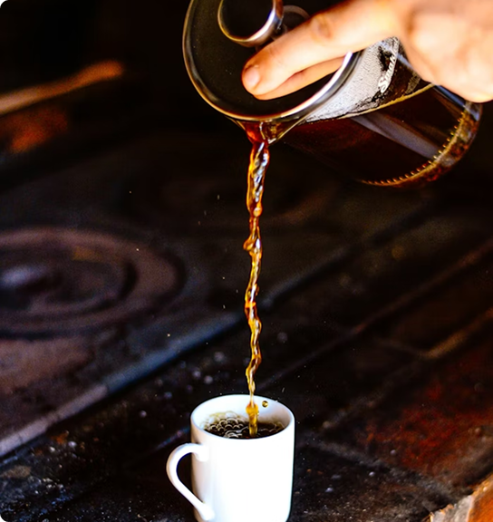
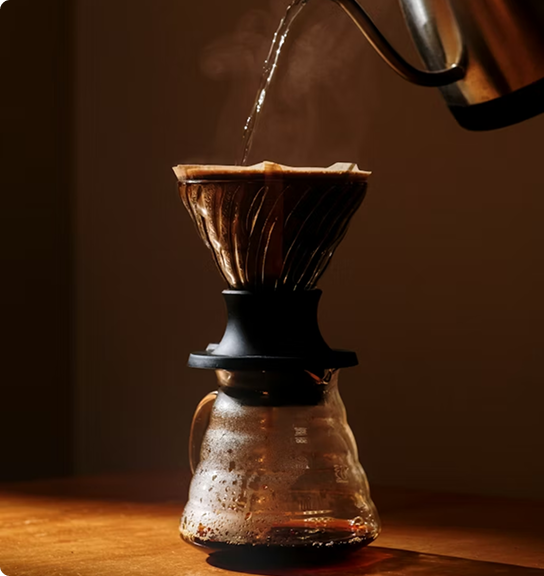

Cada método de preparo valoriza características diferentes do café, criando combinações únicas de sabor, corpo e aroma. Seja para um momento mais intenso, suave ou aconchegante, explorar novos métodos é uma forma de apreciar o café de maneira ainda mais especial.
Um café intenso e encorpado, preparado sob pressão para revelar aromas marcantes, sabor profundo e uma textura cremosa em cada xícara.

Um método encorpado e aromático que destaca os óleos naturais do café, criando uma bebida intensa e aconchegante.

Um método filtrado que revela sabores suaves, notas delicadas e aromas equilibrados em uma xícara limpa e leve.
Um método refrescante e suave, preparado por infusão lenta para destacar notas adocicadas e baixa acidez.